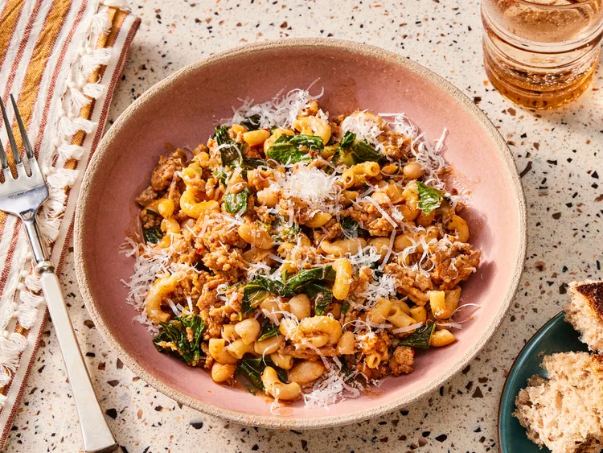

Pasta Fazool
This delicious Pasta Fazool will have you dreaming of Italy back home

In this recipe we'll be making a delicious Pasta Fazool. This recipe creates a hearty,
flavorful base with sweet italian sausage and white beans. Home cooks enjoy using
chard or different kinds of sausage to suit their preferences
Ingredients
- 1 tablespoon olive oil
- 12 ounces sweet bulk italian sausage
- 1 stalk celery, dices
- 1/2 yellow onion, chopped
- 3/4 cup dry elbow macaroni
- 1/4 cup tomato paste
- 3 cups chicken broth, or more as needed, divided
- 1/4 teaspoon crushed red pepper flakes
- 1/4 teaspoon dried oregano
- salt and freshly ground black pepper to taste
- 3 cups chopped swiss chard
- 1 can cannellini beans drained
- 1/4 cup grated parmigiano cheese
Directions
- Gather the ingredients
- Heat oil in a skillet over medium-high heat. Cook and stir sausage in the hot skillet until browned and crumbly, about 5 minutes. Reduce heat to medium. Add diced celery and chopped onion. Cook until onions are translucent, 4 to 5 minutes. Add dry pasta; cook and stir for 2 minutes.
- Stir in tomato paste until evenly distributed, 2 to 3 minutes. Pour in 3 cups broth; increase heat to high and bring to a boil. Stir in red pepper flakes, oregano, salt, and pepper. Reduce heat to medium and let simmer, stirring often, for about 5 minutes. Add more broth if needed.
- Place chopped chard in a bowl. Cover with cold water and rinse leaves; any grit will fall to the bottom of the bowl. Transfer chard to a colander to drain briefly; add to soup. Cook and stir until leaves wilt, 2 to 3 minutes.
- Stir in white beans; continue cooking and stirring until pasta is tender, 4 to 5 minutes. Remove from heat and stir in grated cheese. Serve topped with additional grated cheese.
- Enjoy!